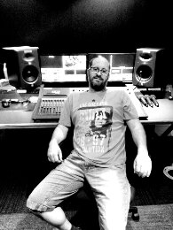
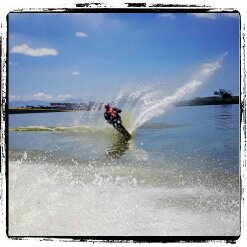

|  |  |
David Plew-Chisholm
Sound Engineer by profession.Specializing in Live Broadcast Sound for Television. Examples: Game Shows , Kids Magazine Shows and Talk Shows. |
| Sound Engineering.🎶 ⭐ ⭐ ⭐ ⭐ ⭐ | WEB Development. U_U ⭐ ⭐ |
| Water Sking.🛥 ⭐ ⭐ ⭐ ⭐ | Drumming.🥁 ⭐ ⭐ ⭐ ⭐ |
| Flying Radio Controlled Planes. 🛩 ⭐ ⭐ ⭐ ⭐ |